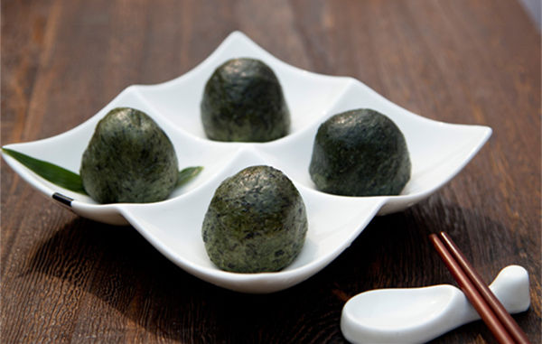

艾草青团又叫“清明果”、“艾米果”，是我的浙江老家独特的风味特产美食。青团采用艾草汁和米粉混合作皮，春笋丝、土猪肉、香干、酸菜、地衣等作馅。口味鲜美，爽糯而不腻，是不可多得的养生美食。
我的家乡大陈是个古色古香的小村落，是典型的农耕文化的代表，美食在这里从来不曾缺失，对于美味更是坚持着老祖宗的古法。这里美食文化源远流长，有著名的大陈面、大陈炭烧饼、霉豆腐、粽子、手工糍粑等等。
江山位于浙西部山区，森林覆盖率67%以上，空气清新，自然植被资源丰富，艾草作为春天的使者，更是春天养生的不可缺少的主角。 春季雨水多，空气潮湿，艾草性热，去潮去寒。所以，我们伟大的老祖宗们创造了艾草果这个无敌健康的养生美味。因为一般做艾果都是在清明前后，所以，又称为“清明果”。
目前市场上卖的所谓的青团(艾米果、清明果)大多由4种做原料做成。一种是用艾草，一种是用麦草，一种是用切克(一种野草)，还有一种是用色素。切克和麦草倒是还好，但是个人觉得艾草是最好的，因为艾草去寒防潮，其他的原材料都不具备这一点。所以，我们一直坚持只用艾草做底料。
艾草性偏温热，所以，有些性偏热的人不是很适宜多吃。所以，我们在馅料里面放入了美味的春笋，春笋是凉性的，所以，一中和的话就不会偏性热了，在保证了美味的同时，又起到了养生的作用。再加上美味的土猪肉和香干，还有微酸的咸菜，绝对是欲罢不能的美味。
我家乡的清明果全部采用纯野生艾草，纯正农家梗米粉和糯米粉的混合，绝无任何明胶添加剂。我们绝不会为了所谓的外皮的劲道而添加任何东西，所以，我们的皮子相对是比较软的，但却很好吃。 其他产地糕点类特产推荐：台湾特产手工制作糕点芋头酥
馅料我们采用我们本地特有的咸菜(口味和雪菜比较接近，但是比雪菜好吃)，加上新鲜的春笋、上等的土猪肉、美味的嫩香干制成。
清明时节雨纷纷，又到吃了清明果的季节了，每年的这个时候，我们这里都家家户户剪艾草，做艾草青团。艾草苦燥辛散，能理气血、温经脉、逐寒湿、止冷痛，而清明时候雨水多，寒潮反复，所以，清明果不仅能够满足我们的口腹之欲，还能有效的防治疾病。
艾叶是一种广谱抗菌抗病毒的药物，它对好多病毒和细菌都有抑制和杀伤作用，对呼吸系统疾病有一定的防治作用。
普通的清明果采用麦草或者色素来做，看不到艾草的纤维。 我们的清明果全部采用野生艾草，可以看得到纤维。
普通的艾米果采用普通的下脚料，质量不能保证。 我们的全部采用鲜嫩的春笋、土猪肉、雪菜、香干精心炒制而成。
很多青团是用机器加色素做的，很不健康。 我们的全部都是手工制作，从艾草开始就是手工提炼，精心制作。